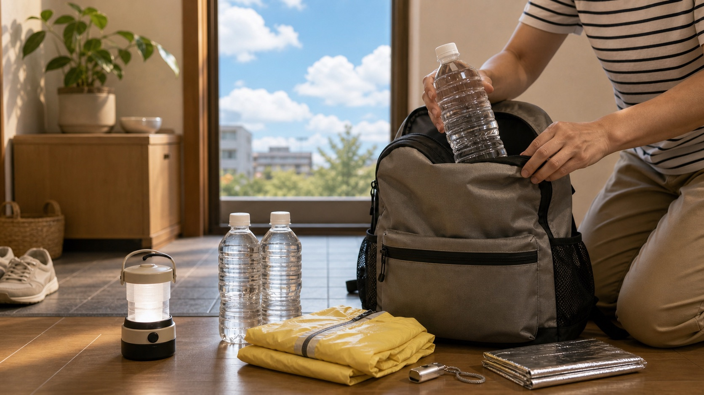

Antes de subir, use apps e sites para montar uma decisão: chuva, vento, trovoada, temperatura, calor, frente fria, tufão e alertas locais.
Camadas que importam
- Previsão horária, não apenas diária.
- Radar de chuva e tendência nas próximas horas.
- Vento em altitude e sensação térmica.
- Risco de trovão, especialmente no verão.
- Alertas oficiais de chuva forte, calor, tufão ou tempestade.
- WBGT e risco de insolação em dias úmidos e quentes.
JMA como base
A Agência Meteorológica do Japão é a referência oficial para previsão, alertas e informações meteorológicas. Use como base antes de comparar com apps comerciais.
Se houver alerta relevante para a área, reduza objetivo ou cancele. A montanha não fica mais segura porque a reserva do transporte já foi paga.
Cidade não é cume
A previsão de uma cidade próxima pode ser útil para acesso, mas não descreve vento, nuvem, frio ou visibilidade no alto. Em áreas alpinas, a mudança de tempo pode ser mais rápida e mais severa.
Combine previsão oficial, registros recentes, câmera ao vivo quando houver e informação local do parque, teleférico ou abrigo.
Decisão prática
Se duas fontes divergem, planeje pelo cenário pior. Se o grupo é iniciante, diminua ainda mais a tolerância. Clima duvidoso não combina com rota longa, crista exposta ou descida dependente de último transporte.
Fontes consultadas
- Japan Meteorological Agency
- Heat Illness Prevention Information
- National Parks of Japan: Safety Information
Origem editorial: pauta da Elevação, publicada no Japão Relativo em 16 de agosto de 2026.